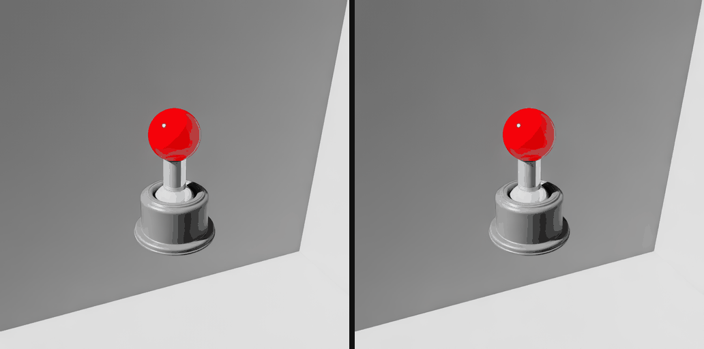
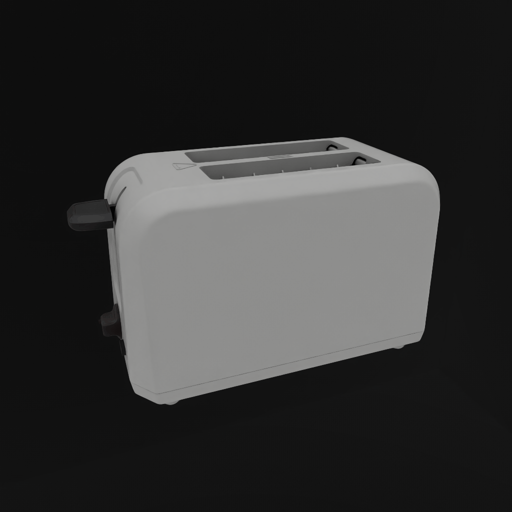
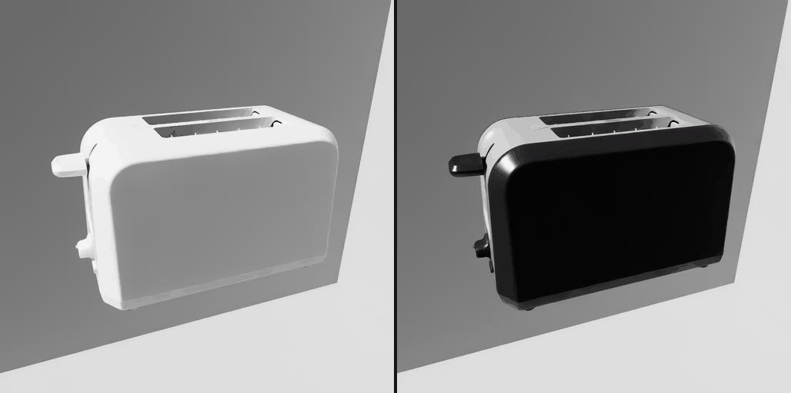

Visual Materials Workflow#
This guide takes one asset to demonstrable conformance on visual materials. You author an OpenPBR surface and a display colour, validate the result against a profile, render it in Kit, and work out what the render result is worth.
Visual materials in SimReady cover two separate things. A material describes a shaded surface through a shading network. Display colour is a primvar holding a single colour per prim and no network at all, which is what makes it readable by consumers that never evaluate a material. Each gets its own tool here, because they are different contracts.
There are two ways in, and both depend on the contract in step 1. Step 2 exports a conformant material from Blender. Step 3 upgrades an asset that already exists. All commands run from the repository root unless stated otherwise.
What you end up with#
Stage |
Tool |
Outcome |
|---|---|---|
Baseline |
|
A profile report, and a record of what it does not cover |
OpenPBR surfaces |
|
|
Display colour |
|
|
Re-validation |
|
The static contract, confirmed |
Benchmark |
|
Evidence that the geometry bound to each surface drew in the engine |
Static validation and the benchmark answer different questions. Validation inspects the authored scene description and confirms the file holds the right values. The benchmark loads the asset in Kit and confirms the engine resolved it. Neither establishes that the asset looks correct, and step 5 is about where that line falls.
Prerequisites#
Requirement |
How to get it |
Needed for |
|---|---|---|
Python |
3.12 |
All steps |
Git LFS |
|
Sample assets |
|
|
Steps 2 and 3 |
|
|
Steps 2 and 3 |
|
Refer to Running Tests |
Step 4 |
Kit or Isaac Sim |
2024.2.0 or later |
Step 4 |
One environment covers steps 2 and 3. requirements.txt lists simready-validate and
numpy, and usd-core arrives behind them. Two more are needed and neither is in that
file:
pip install -r requirements.txt
pip install "MaterialX>=1.39" pillow
MaterialX supplies the OpenPBR node definitions. A usd-core wheel ships no usdMtlx
plugin, so in a pip environment the Python package is the only source of them. Without it
VM.PBR.002 and VM.PBR.003 have nothing to compare an asset against and report nothing,
which looks the same as a clean asset. The validator emits one line per run, VM.PBR.002 and VM.PBR.003 did not run. VM.PBR.001 matches one shader identifier, needs no node
definition, and runs either way. Pillow is how VM.TEX.001 gets a texture’s dimensions,
and the display-colour script uses it to sample texture maps.
The core tier#
simready-validate checks an asset against the core tier: the capabilities, features,
profiles and rule checkers that make up the spec. It is a separate package from the
validator, so install it alongside:
pip install simready-foundation-tier-core
SimReady Foundation PyPI Packages covers the tiers, the index to install from, and how content is discovered.
The benchmark#
Give simready-benchmark a virtual environment of its own: it installs a Kit engine plugin
on top of its own USD build, and Running Tests covers the setup.
The worked example uses the toaster sample. Both conform scripts write into an asset in place, so take a copy and work on that. The samples are LFS-tracked binaries and a rewrite moves the file hash even when nothing about the content changes.
mkdir -p ../vm-workflow
cp -r sample_content/common_assets/props_general/gen_appliance_toaster_v01_01 ../vm-workflow/
The shipped samples already have an OpenPBR surface and a display colour, so the worked example below confirms a conformant asset. Point the same commands at your own asset to see them repair one, and read each transcript for the shape of its output; the counts and colours belong to this sample.
1. The material contract#
Three surfaces on one prim#
A SimReady Material prim can declare three surface outputs at once, one per render
context. A render context is the token a renderer uses to choose which shader inside a
material it evaluates.
Output |
Shader |
Render context |
Feature |
Requirement |
|---|---|---|---|---|
|
UsdPreviewSurface |
universal |
|
com.nvidia.usd.VM.PS.001 |
|
OmniPBR |
|
|
VM.MDL.001 |
|
OpenPBR |
|
|
VM.PBR.001 |
These are sibling contracts. An asset may declare any combination, and none of the three depends on another. OpenPBR is the recommended target for new assets because it is a portable format that needs no vendor-specific material; MDL stays permitted for existing content. Refer to FET006 OpenPBR Materials for the full contract.
Which surface the renderer picks#
Kit resolves one surface per material by walking an ordered list of render contexts and
taking the first one the material has. The list is the carb setting
/persistent/app/hydra/material/renderContexts, and Kit ships it as ["mdl", "mtlx", ""].
An asset with both an OmniPBR and an OpenPBR surface therefore renders the OmniPBR one. If you open a migrated asset in Kit and it looks unchanged, that is why: you are looking at MDL.
The benchmark tests in step 4 pin the context themselves and verify the pin took, so you do not need to change the setting to see the OpenPBR surface rendered. Refer to How a Surface Is Measured for how they do it.
Render context is a different mechanism from binding purpose. Render context selects which
shader inside a material is evaluated. Binding purpose, authored as
material:binding:full or material:binding:preview, selects which material is bound to a
prim in the first place. This guide concerns render context.
Display colour is a primvar#
primvars:displayColor has no render context and no surface output, because it has no
shading network. That is the point of it: it is the appearance layer available to a
consumer that never evaluates a material, such as a low-fidelity or non-ray-traced render
path. In Kit, the RTX default material takes it as its diffuse tint for geometry with no
material bound.
Code |
Requirement |
Status |
|---|---|---|
Every renderable Gprim resolves a |
Required |
|
Every component is within |
Required |
|
|
Optional |
Display opacity works differently. A material has to opt in to reading
displayOpacity; gltf/pbr.mdl is one that does. Kit’s RTX default material has no
opacity term, so geometry with no material bound picks up the colour and nothing else.
Neither conform script in this guide authors display opacity.
Colour space#
Colours and data channels both need colour space information, and the rules differ. Constants are linear everywhere. Textures declare their own, and each of the three surfaces declares it somewhere else, with a different default and a different vocabulary.
Constants and display colour are linear. primvars:displayColor, and any constant you
type onto a surface input, are Linear Rec.709 with a D65 white point. 0.18 is mid grey.
USD resolves the colour space from the attribute’s own colorSpace metadata, then from
UsdColorSpaceAPI on the prim, then from the nearest ancestor that authors one, and falls
back to lin_rec709_scene when none is authored, so an asset that authors nothing still
has a defined colour space.
So a value taken from an sRGB colour picker needs converting before you write it. 0.5
picked as mid grey in sRGB is much lighter once interpreted as linear. The display-colour
script in step 3 handles this by decoding every texel through the sRGB transfer function
before it averages, so you only need to think about it when you author a value by hand.
Textures are where the three surfaces diverge.
Surface |
Declared on |
No declaration means |
Requirement |
|---|---|---|---|
UsdPreviewSurface |
|
|
|
MDL |
|
|
|
OpenPBR |
|
no transform at all |
auto reads the image file’s own colour-space metadata; where the file states nothing, it
decodes any 8-bit three- or four-channel image as sRGB and treats everything else as raw.
Two consequences follow, and they pull in opposite directions.
On UsdPreviewSurface and MDL a colour texture can rely on the default, because auto
decodes 8-bit RGB the way a colour texture needs. A data texture cannot: image editors
write 8-bit RGB as a matter of course, so a roughness, metalness or occlusion map left
undeclared is decoded as though it held colour and every value comes out low. Declare
raw on data inputs. Single-channel and high-bit-depth files fall outside the sRGB branch,
so auto is already correct for a single-channel mask.
On OpenPBR there is no auto. An undeclared texture gets no transform whatever the file
is, so a colour texture must declare srgb_texture or it is consumed undecoded and
renders washed out. A data texture needs nothing, or none.
Author srgb_texture, not srgb_rec709_scene. The two name the same encoding, the sRGB
transfer function over Rec.709 primaries, but only the MaterialX spelling resolves on an
OpenPBR surface. OpenUSD adopted srgb_rec709_scene in 24.11; MaterialX defines its
transform nodes under srgb_texture, and the mapping between the two vocabularies arrived
in MaterialX 1.39.4, which no runtime SimReady targets ships. A texture tagged with the
OpenUSD name is consumed undecoded and renders washed out with nothing reported. The MDL
loader does resolve srgb_rec709_scene, so an asset with both surfaces can be correct on
one and wrong on the other.
Mid grey is 0.18 as a constant and code 118 in an 8-bit sRGB texture. Both are the 18%
grey card; they differ because the texture is sRGB-encoded and the constant is linear. Code
128 is not mid grey in a colour texture: it is the middle of the encoding range and
decodes to 0.216, about 20% lighter than a grey card.
The materials requirements overview states the conventions of all four appearance formats side by side, including display colour.
3. Upgrading an Omniverse asset with OmniPBR#
This path is for an asset that already exists and already has an OmniPBR (MDL) surface on
outputs:mdl:surface. The job is to add an OpenPBR surface and a display colour beside it
without disturbing what is there. It assumes an asset that already loads and passes the
core SimReady features.
Four passes follow: a baseline profile run, the OpenPBR conform, the display-colour conform, and a second profile run.
Establish a baseline#
Run the profile the asset targets:
simready-validate --project-config sample_content/project_config.toml --profile Robotics-Prop --version 3.3.0 ../vm-workflow/gen_appliance_toaster_v01_01/simready_usd/sm_gen_appliance_toaster_v01_01.usd
--project-config takes the capability, feature and profile directories from the
[validate] section of that file, which the repository keeps pointed at the core tier.
Spelling the three out with --rules-path, --features-path and --profiles-path does
the same thing, and is the form
SimReady Validation Workflow shows. This guide takes the short
one because it runs the command four times.
The run prints a page of capability-parsing warnings before it prints anything about your asset. The result is the last two lines, and the exit code is 0 for a pass and 1 for anything else:
Asset: ../vm-workflow/gen_appliance_toaster_v01_01/simready_usd/sm_gen_appliance_toaster_v01_01.usd
[PASSED] Robotics-Prop v3.3.0
Name a profile version that does not exist and you get the Asset: line, no verdict, and
exit 1. The reason is in the warnings above it, as Profile ... is not registered — cannot validate. Refer to Profiles for the versions on offer.
Note
A green profile line establishes less about visual materials than it appears to.
Robotics-Prop 3.3.0 requires the UsdPreviewSurface preview (FET_006_STANDARD) and marks
display colour, OpenPBR and MDL optional. Three profiles list FET_006_OPENPBR and
FET_010_STANDARD: Robotics-Prop, Robot-Body and Robot-Gripper. All three mark both
optional. An optional feature’s requirements still run, and they are reported under
optional requirements in the JSON report, but they cannot fail the profile. So no profile
today fails an asset for shipping no OpenPBR surface or no display colour.
Two requirements ask for less than their names suggest:
VM.PBR.001 asks for an OpenPBR surface on
outputs:mtlx:surface, and nothing else on that terminal satisfies it. An MDL surface isVM.MDL.003, a separate requirement, so a profile that accepts either lists both. It resolves each renderable Gprim’s binding at thefullpurpose and judges the material that comes back, so an unused material in/Looksand one bound only for preview both fall outside it.VM.PBR.003 asks for a connected surface terminal in some render context. A preview plus an MDL surface satisfies it with no MaterialX anywhere.
So a profile run covers everything except the OpenPBR and display-colour contracts. The next two subsections each open with the tool that covers one of those.
Conform the OpenPBR surfaces#
Use the skill at skills/simready-foundation-conform-fet-006-openpbr/. Its bundled script
authors an OpenPBR surface on materials that already have a UsdPreviewSurface preview and an
OmniPBR final surface, which is the shape every sample under
sample_content/common_assets/props_general/ has.
The path argument takes a USD file, or a directory to search for simready_usd assets.
Start with the state of the asset:
python skills/simready-foundation-conform-fet-006-openpbr/assets/scripts/migrate_to_openpbr.py ../vm-workflow/gen_appliance_toaster_v01_01 --verify
ok ../vm-workflow/gen_appliance_toaster_v01_01/simready_usd/sm_gen_appliance_toaster_v01_01.usd
0 problem(s) across 1 asset(s)
--verify reports VM.PBR.001, VM.PBR.002 and texture resolution, and exits 0 only when it
finds nothing. On an asset with no OpenPBR surface it exits 1 and prints one line per
material, each naming the prim, the problem and the requirement:
/RootNode/Geometry/body_obj_01/body_mesh_01/VisualMaterials/m_opaque__plastic__toaster_v01_01: no outputs:mtlx:surface (VM.PBR.001)
Now see what a run would write, without writing anything:
python skills/simready-foundation-conform-fet-006-openpbr/assets/scripts/migrate_to_openpbr.py ../vm-workflow/gen_appliance_toaster_v01_01 --dry-run
../vm-workflow/gen_appliance_toaster_v01_01/simready_usd/sm_gen_appliance_toaster_v01_01.usd: 6 migrated, 2 skipped (dry run)
/RootNode/Geometry/body_obj_01/body_mesh_01/VisualMaterials/m_opaque__plastic__toaster_v01_01: emission_color=(1, 1, 1), geometry_opacity=1.0, specular_ior=1.5
texture: base_color <- t_gen_appliance_toaster_v01_01_a.png (rgb)
texture: base_metalness <- t_gen_appliance_toaster_v01_01_orm.png (b)
texture: specular_roughness <- t_gen_appliance_toaster_v01_01_orm.png (g)
texture: geometry_normal <- t_gen_appliance_toaster_v01_01_n.png (rgb)
/RootNode/Geometry/body_obj_01/body_mesh_01/VisualMaterials/m_opaque__metal__toaster_v01_01: emission_color=(1, 1, 1), geometry_opacity=1.0, specular_ior=1.5
texture: base_color <- t_gen_appliance_toaster_v01_01_a.png (rgb)
texture: base_metalness <- t_gen_appliance_toaster_v01_01_orm.png (b)
texture: specular_roughness <- t_gen_appliance_toaster_v01_01_orm.png (g)
texture: geometry_normal <- t_gen_appliance_toaster_v01_01_n.png (rgb)
...
6 material(s) migrated across 1 asset(s)
24 channel(s) carried across as textures.
Those counts are what the run would author, whatever is there already. The script owns the
prims it writes and rewrites them from scratch every pass, so a conformant asset reports
the same six materials as a broken one. Each mesh has its own VisualMaterials scope, so a
material shared by several meshes is authored once per mesh. The two skipped materials are
the asset’s physics materials, which describe friction, so the script leaves them alone.
Drop --dry-run to write. The output is the same, without (dry run):
python skills/simready-foundation-conform-fet-006-openpbr/assets/scripts/migrate_to_openpbr.py ../vm-workflow/gen_appliance_toaster_v01_01
The four flags are --verify, --dry-run, --textures and --no-textures. Textures are
reconnected by default, so --textures names the default and changes nothing.
--no-textures flattens texture-driven channels to constants instead; those materials
still satisfy VM.PBR.001 and VM.PBR.002, and they will not look like the original. The
before-and-after image in step 5 is exactly that difference.
The prims the script owns are one OpenPBR_Shader per material plus the reader nodes named
OpenPBR_Shader_* beside it. A material that already has an OpenPBR surface under a
different prim name was authored by hand or by a DCC; the script reports it as a conflict
and leaves it alone. Because these assets are LFS-tracked binaries that cannot be merged,
re-running the script is the way to resolve a collision with someone else’s edit.
A re-run rewrites the binary layer even when nothing changes, so the file hash moves. To confirm a re-run was inert, compare flattened USD instead of file hashes.
Note
--verify checks authored scene description. It covers VM.PBR.001, VM.PBR.002 and whether
each texture it names resolves to a file. VM.PBR.003, the structural check on the shading
network, belongs to simready-validate.
VM.PBR.002 and VM.PBR.003 need MaterialX installed, which the Prerequisites cover.
Conform display colour#
Use the skill at skills/simready-foundation-conform-fet-010-standard/. Its script
authors a constant primvars:displayColor on every renderable Gprim, derived from the
material bound to that Gprim. It takes the same four flags as the OpenPBR script, with
--textures and --no-textures controlling whether base colour maps are sampled.
The script resolves base colour through OpenPBR first, then UsdPreviewSurface, then MDL, and reports which tier it used. On these samples the first two tiers hold the same map, so running this before or after the OpenPBR conform gives the same values.
python skills/simready-foundation-conform-fet-010-standard/assets/scripts/author_display_color.py ../vm-workflow/gen_appliance_toaster_v01_01 --verify
FAIL ../vm-workflow/gen_appliance_toaster_v01_01/simready_usd/sm_gen_appliance_toaster_v01_01.usd
/RootNode/Geometry/body_obj_01/body_mesh_01/body_mesh_01: GPrim '/RootNode/Geometry/body_obj_01/body_mesh_01/body_mesh_01' does not resolve a 'primvars:displayColor', authored on the prim or inherited from an ancestor (DISP.001)
/RootNode/Geometry/lever_obj_01/lever_mesh_01: GPrim '/RootNode/Geometry/lever_obj_01/lever_mesh_01' does not resolve a 'primvars:displayColor', authored on the prim or inherited from an ancestor (DISP.001)
...
5 problem(s) across 1 asset(s) checked
--verify reports DISP.001 and DISP.002, one line per Gprim, and exits 1. None of the five
meshes has a display colour yet, which is what the authoring step below fixes; re-run it
afterwards and it reports ok and 0 problem(s).
Then author. --edit-target binding puts each opinion in the layer holding that Gprim’s
material:binding, which for these samples is payloads/instances.usda. The meshes are
instanceable, and a primvar cannot be authored on an instance proxy at the path it appears
on, so the default --edit-target stage reaches nothing here:
python skills/simready-foundation-conform-fet-010-standard/assets/scripts/author_display_color.py ../vm-workflow/gen_appliance_toaster_v01_01 --edit-target binding
../vm-workflow/gen_appliance_toaster_v01_01/simready_usd/sm_gen_appliance_toaster_v01_01.usd: 5 authored, 0 skipped
/RootNode/Geometry/body_obj_01/body_mesh_01/body_mesh_01: (0.2469, 0.2459, 0.2434) -> instances.usda/Instances/body_mesh_01/body_mesh_01
m_opaque__plastic__toaster_v01_01 -> (0.0840, 0.0840, 0.0840) OpenPBR base_color <- t_gen_appliance_toaster_v01_01_a.png sampled over 13952 triangle(s)
m_opaque__metal__toaster_v01_01 -> (0.3500, 0.3484, 0.3443) OpenPBR base_color <- t_gen_appliance_toaster_v01_01_a.png sampled over 20640 triangle(s)
/RootNode/Geometry/lever_obj_01/lever_mesh_01: (0.0123, 0.0123, 0.0123) -> instances.usda/Instances/lever_mesh_01/lever_mesh_01
m_opaque__plastic__toaster_v01_01 -> (0.0123, 0.0123, 0.0123) OpenPBR base_color <- t_gen_appliance_toaster_v01_01_a.png sampled over 940 triangle(s)
/RootNode/Geometry/tray_obj_01/tray_mesh_01: (0.3788, 0.3731, 0.3592) -> instances.usda/Instances/tray_mesh_01/tray_mesh_01
m_opaque__metal__toaster_v01_01 -> (0.3788, 0.3731, 0.3592) OpenPBR base_color <- t_gen_appliance_toaster_v01_01_a.png sampled over 2012 triangle(s)
...
instances.usda: 5 colour(s) authored
Per-material area-weighted colour:
gen_appliance_toaster_v01_01/m_opaque__metal__toaster_v01_01: (0.3506, 0.3489, 0.3446) across 2 Gprim(s)
gen_appliance_toaster_v01_01/m_opaque__plastic__toaster_v01_01: (0.0822, 0.0822, 0.0822) across 4 Gprim(s)
5 Gprim(s) given a display colour across 1 asset(s)
Read the per-material lines under each Gprim as well as the value. They name which material
each contribution came from and how it was derived, and the same record goes into the
primvar’s customData so it survives in the file:
color3f[] primvars:displayColor = [(0.37882704, 0.3730906, 0.35922563)] (
colorSpace = "lin_rec709_scene"
customData = {
dictionary simready = {
string displayColorSource = "m_opaque__metal__toaster_v01_01: OpenPBR base_color <- t_gen_appliance_toaster_v01_01_a.png sampled over 2012 triangle(s)"
}
}
interpolation = "constant"
)
The console rounds to four decimals for reading; the primvar holds the full value.
Three properties of the derivation decide what its output is good for.
One colour per Gprim. The value is the area-weighted mean of the texels the bound
geometry lands on, taken in linear light. Where a Gprim has several materials through
materialBind GeomSubsets, they are blended. The toaster’s body mesh resolves
(0.2469, 0.2459, 0.2434), which matches neither its plastic (0.0840, 0.0840, 0.0840)
nor its metal (0.3500, 0.3484, 0.3443). A printed label or a painted stripe disappears
into the mean.
Sampling only where the geometry lands. Five of the electricians toolbox’s materials
share one atlas. Averaging the whole image would hand the same yellow to all five;
sampling per material gives the locks (0.011, 0.010, 0.007) and the lid
(0.633, 0.448, 0.042).
Nothing is invented. A Gprim with no bound material, no base colour, or an unresolvable
texture is listed as SKIPPED with its reason and left without a display colour, so
DISP.001 still fails on it visibly. Out-of-range components are clamped; NaN and Inf are
refused.
The script is safe to re-run, and its sampling uses a fixed stratified point set instead of
a random one, so a second pass over an unchanged asset produces the same values. Geometry
that already has a display colour without the simready:displayColorSource record was
authored by hand, and is reported as a conflict and left alone.
Re-validate#
Run the baseline command again, against the copy you have been working on:
simready-validate --project-config sample_content/project_config.toml --profile Robotics-Prop --version 3.3.0 ../vm-workflow/gen_appliance_toaster_v01_01/simready_usd/sm_gen_appliance_toaster_v01_01.usd
Asset: ../vm-workflow/gen_appliance_toaster_v01_01/simready_usd/sm_gen_appliance_toaster_v01_01.usd
[PASSED] Robotics-Prop v3.3.0
The console line is identical whatever the two conform scripts did, because the features they conform are optional in every profile that lists them. To see per-feature detail, write a JSON report:
simready-validate --project-config sample_content/project_config.toml --profile Robotics-Prop --version 3.3.0 --output results.json ../vm-workflow/gen_appliance_toaster_v01_01/simready_usd/sm_gen_appliance_toaster_v01_01.usd
results.json is keyed by asset path, and each asset has a features_summary with one
entry per feature holding passed, version, dependencies and, where they apply,
failing requirements and optional requirements. The four visual-material features on
the conformed toaster:
FET_010_STANDARD {"dependencies": "[]", "passed": true, "version": "0.1.0"}
FET_006_MDL {"dependencies": "[]", "passed": true, "version": "0.2.0"}
FET_006_OPENPBR {"dependencies": "[]", "passed": true, "version": "0.1.0"}
FET_006_STANDARD {"dependencies": "[]", "passed": true, "version": "0.2.0"}
This is where an unmet optional requirement shows up. An asset whose materials have no
physically based final surface still reports "passed": true for FET_006_OPENPBR, with
the requirement it missed listed alongside:
FET_006_OPENPBR {"dependencies": "[]", "optional requirements": "['com.nvidia.simready.VM.PBR.001']", "passed": true, "version": "0.1.0"}
Removing the OpenPBR surface produces that line even where an MDL surface remains, since
VM.PBR.001 reads only outputs:mtlx:surface.
So optional requirements lists what did not pass and did not block. For a visual-materials
review that makes the JSON the interesting output, and it makes each conform script’s
--verify your pass or fail gate for its own feature. --verify is the only place today
where a missing OpenPBR surface or a missing display colour produces a non-zero exit code.
Refer to SimReady Validation Workflow for stamping results into
the asset with --stamp-asset-validation, which is what makes the benchmark plan these
tests without --features.
4. Benchmark#
Four tests cover visual materials. Each loads the asset in Kit and measures pixels.
Test |
What it renders |
Feature |
|---|---|---|
The OpenPBR surface on |
|
|
The MDL surface on |
|
|
The UsdPreviewSurface on |
|
|
|
|
The first three share a room, a light rig and a camera framing, so a difference between them comes from the material. Each puts its own render context at the front of Kit’s list, checks the value took before it renders anything, and puts the list back afterwards. Nothing edits the asset’s materials. The number each one reports is what the geometry bound to a material with that context contributed, measured by hiding exactly that geometry and differencing, so on a partly migrated asset it is smaller than what the asset as a whole drew.
display_color_response works by substitution. It binds one material over the whole asset
from a single relationship on the asset’s root prim, marked
bindMaterialAs = "strongerThanDescendants", which beats every binding the asset authors
below it, including bindings inside prototypes. That material is the OpenPBR surface DISP.001’s
guidance nominates, with a MaterialX primvar reader feeding displayColor into base_color.
The test renders the asset through four variants of it and takes the answer from the
differences:
Variant |
What it changes |
What the difference answers |
|---|---|---|
Read |
The reader, falling back to magenta |
The frame everything else is compared against |
Altered |
The same reader, falling back to green |
Whether any Gprim fell back, which is DISP.001 |
Removed |
No reader, flat magenta |
Whether the primvar drove the pixels, or a constant did |
Opacity |
The Read material with the |
DISP.003 |
Nothing on the asset is edited and nothing is written to disk. mtlx has to be in Kit’s
render-context list for the substituted material to resolve at all, so the test checks the
list and fails the run when it is missing.
The asset’s stamped profile drives planning, so an asset stamped against a profile without
a feature will not pick its tests up. --features bypasses that gate while the plan is
built:
simready-benchmark --assets ../vm-workflow/gen_appliance_toaster_v01_01/simready_usd/sm_gen_appliance_toaster_v01_01.usd --features FET_006_OPENPBR
simready-benchmark --assets ../vm-workflow/gen_appliance_toaster_v01_01/simready_usd/sm_gen_appliance_toaster_v01_01.usd --features FET_010_STANDARD
Pass one --features value per invocation. --only-features is a different flag: it
narrows a plan that already exists, where --features acts while the plan is built. Refer
to Running Tests for installation and engine configuration.
A surface test can skip, fail or pass. It skips when no material on the asset has a surface for its context, because the asset never claimed that feature: an asset shipping only MDL skips the OpenPBR and UsdPreviewSurface tests instead of failing them. It fails in two cases: the asset has the surface but no material with it is bound to geometry the render draws, and the bound geometry draws too few pixels to measure. Otherwise it passes.
5. Read the report#
Results land under _testing/. Open index.html for the run, with a page per asset under
_testing/assets/. Captured frames and the per-test result.json sit under
_testing/results/<asset path>/.simready/runtime/<test name>/. Refer to
Reading Reports for the full layout and exit codes.
The frames are more informative than the counts, so open them. Each surface test keeps four: the asset hidden, that frame repeated to establish a noise floor, the asset shown with its supporting geometry hidden, and the asset shown. The number the test judges is the difference between the last two.

The toaster in the mid-grey room, shaded by the OpenPBR surface on outputs:mtlx:surface.
One run of openpbr_renders on this sample reported five Gprims bound to a material with
an OpenPBR surface, drawing 293,685 pixels against a 212 pixel noise floor, with the
context list pinned to [mtlx, mdl, universal]. Two identical frames would mean that
geometry contributed nothing.
What a pass establishes#
Geometry bound to a material with the named surface drew the frame, with that context
first in Kit’s list. That is a stronger claim than “the asset rendered”: the test resolves
bindings before it measures, so an unbound MaterialX material sitting in /Looks cannot
supply the pass while other materials supply the pixels.
display_color_response establishes that the display colours in the file reach the shader.
Swapping the primvar reader’s fallback changes the frame only where a Gprim resolved no
display colour, so a pass means none did. Taking the reader out entirely changes the frame
wherever the primvar was driving the shading, so a pass means it was. The test also checks
the file for coverage and reports both answers side by side. Their disagreement is the
useful signal: a file that resolves everywhere and a render that does not means the primvar
is not reaching the shader, which is a different defect from the asset not having one.

What a pass does not establish#
That the surface network under test is the one Kit evaluated. The trailing render contexts stay in the list as fallbacks, deliberately, because without them everything with no surface for the pinned context renders as the default material. So geometry whose OpenPBR network fails to resolve still draws, through MDL, and still counts. Catching that needs a probe that writes a known value into the shader under test and looks for it, which means editing the material, and no test in this family does that today.
Nor does a pass establish that the surface looks correct or has its intended textures. The clearest way to see the size of that gap is the same prop rendered through the same room, light rig and camera, before and after migration:

Left, the OpenPBR surface with constant inputs and no textures wired: flat white, because
base_color was unauthored and fell back to the node definition’s default. Right, the same
prop after migration kept its maps. Both pass openpbr_renders. Everything
separating those two frames is outside what the test judges, which is why the frames are
kept instead of reduced to a number.
The same boundary applies to display colour, and display_color_response is explicit about
it. The test asserts nothing about which display colour is brighter than which, and no match
between a pixel and an authored value. RTX tone-maps and the scene is dome-lit, so no
absolute match is available, and DISP.002 sets no plausibility band to check a relative one
against. Whether the shipped colours are the right colours is not something a render can
settle: the conform script’s derivation approximates albedo without claiming to match what a
path tracer produces for the same object.
A full green run supports one narrow claim. The asset has the surfaces and primvars the features describe, the values are in range, and the geometry bound to each surface drew the frame with that context resolved first. Whether the asset looks right is a judgement a human still has to make by looking at the frames.
Common mistakes#
Symptom |
Cause |
Fix |
|---|---|---|
Migrated asset looks unchanged in Kit |
Kit resolved the MDL surface, which sits ahead of |
Run the step 4 benchmark, which pins the context and confirms the pin took |
Display colours all come back |
|
Install both and re-run; the log records when this happened |
Display colour looks washed out |
An sRGB value was written without converting to linear |
Decode through the sRGB transfer function first |
A profile pass on an asset with no OpenPBR surface |
|
Use |
A Blender export has no |
|
Set it to |
A Blender export has an unreferenced copy under |
|
Leave the mode on |
Where to go next#
FET006 OpenPBR Materials and FET010 Display Color for the two contracts in full.
Visual Materials capability for VM.PBR.001, and Display Color capability for DISP.001 to DISP.003.
FET006 Materials and FET010 Display Color for the benchmark families and what each test guards against.
SimReady Validation Workflow for validator setup, JSON reports and stamping.
Profiles for which profiles select these features and at which version.